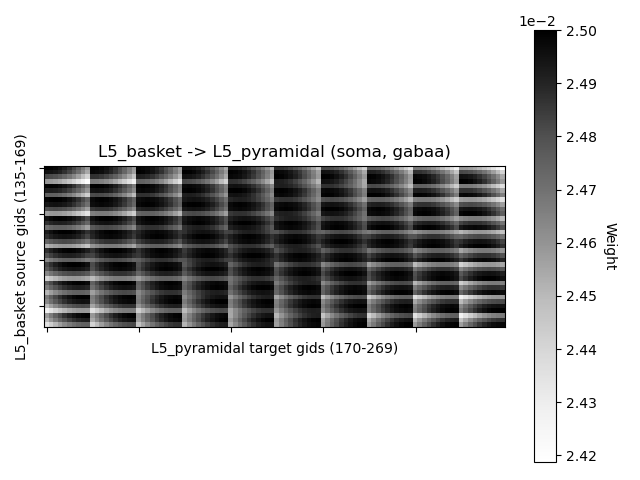
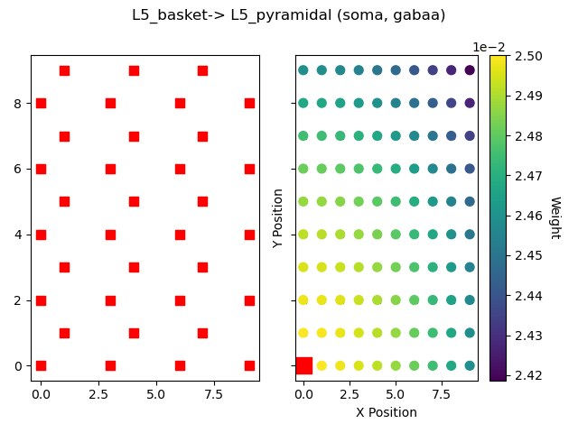
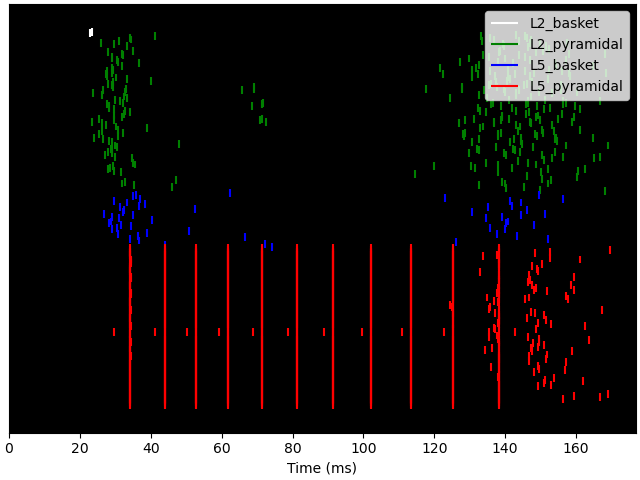
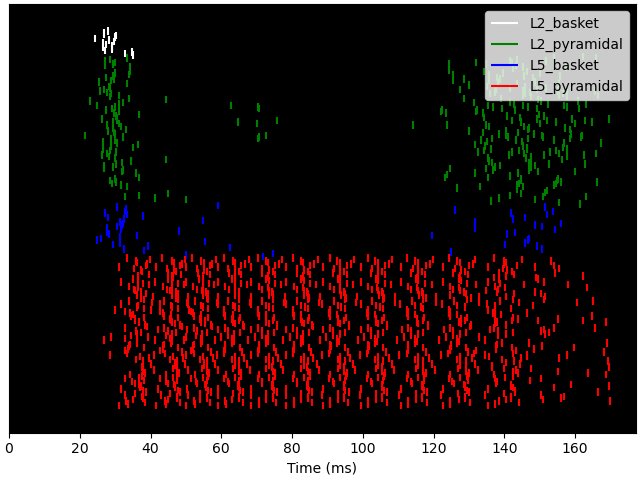

Note
Click here to download the full example code or to run this example in your browser via Binder
03. Modifying local connectivity¶
This example demonstrates how to modify the network connectivity.
# Author: Nick Tolley <nicholas_tolley@brown.edu>
# sphinx_gallery_thumbnail_number = 2
import os.path as op
Let us import hnn_core.
import hnn_core
from hnn_core import jones_2009_model, simulate_dipole
To explore how to modify network connectivity, we will start with simulating
the evoked response from the
evoked example, and
explore how it changes with new connections. We first instantiate the
network. (Note: Setting add_drives_from_params=True loads a set of
predefined drives without the drives API shown previously).
net_erp = jones_2009_model(add_drives_from_params=True)
Instantiating the network comes with a predefined set of connections that
reflect the canonical neocortical microcircuit. net.connectivity
is a list of dictionaries which detail every cell-cell, and drive-cell
connection. The weights of these connections can be visualized with
plot_connectivity_weights() as well as
plot_cell_connectivity(). We can search for specific
connections using pick_connection which returns the indices
of net.connectivity that match the provided parameters.
from hnn_core.viz import plot_connectivity_matrix, plot_cell_connectivity
from hnn_core.network import pick_connection
print(len(net_erp.connectivity))
conn_indices = pick_connection(
net=net_erp, src_gids='L5_basket', target_gids='L5_pyramidal',
loc='soma', receptor='gabaa')
conn_idx = conn_indices[0]
print(net_erp.connectivity[conn_idx])
plot_connectivity_matrix(net_erp, conn_idx)
gid_idx = 11
src_gid = net_erp.connectivity[conn_idx]['src_gids'][gid_idx]
fig = plot_cell_connectivity(net_erp, conn_idx, src_gid)
-  L5_pyramidal (soma, gabaa)" class = "sphx-glr-multi-img"/>
-  L5_pyramidal (soma, gabaa)" class = "sphx-glr-multi-img"/>
66
L5_basket -> L5_pyramidal
cell counts: 35 srcs, 100 targets
connection probability: 1.0
loc: 'soma'; receptor: 'gabaa'
weight: 0.025; delay: 1.0; lamtha: 70.0
Data recorded during simulations are stored under
Cell_Response. Spiking activity can be visualized after
a simulation is using plot_spikes_raster()
dpl_erp = simulate_dipole(net_erp, tstop=170., n_trials=1)
net_erp.cell_response.plot_spikes_raster()
Joblib will run 1 trial(s) in parallel by distributing trials over 1 jobs.
Building the NEURON model
[Done]
Trial 1: 0.03 ms...
Trial 1: 10.0 ms...
Trial 1: 20.0 ms...
Trial 1: 30.0 ms...
Trial 1: 40.0 ms...
Trial 1: 50.0 ms...
Trial 1: 60.0 ms...
Trial 1: 70.0 ms...
Trial 1: 80.0 ms...
Trial 1: 90.0 ms...
Trial 1: 100.0 ms...
Trial 1: 110.0 ms...
Trial 1: 120.0 ms...
Trial 1: 130.0 ms...
Trial 1: 140.0 ms...
Trial 1: 150.0 ms...
Trial 1: 160.0 ms...
<Figure size 640x480 with 1 Axes>
We can also define our own connections to test the effect of different
connectivity patterns. To start, net.clear_connectivity() can be used
to clear all cell-to-cell connections. By default, previously defined drives
to the network are retained, but can be removed with net.clear_drives().
net.add_connection is then used to create a custom network. Let us first
create an all-to-all connectivity pattern between the L5 pyramidal cells,
and L2 basket cells. hnn_core.Network.add_connection() allows
connections to be specified with either cell names, or the cell IDs (gids)
directly.
def get_network(probability=1.0):
net = jones_2009_model(add_drives_from_params=True)
net.clear_connectivity()
# Pyramidal cell connections
location, receptor = 'distal', 'ampa'
weight, delay, lamtha = 1.0, 1.0, 70
src = 'L5_pyramidal'
conn_seed = 3
for target in ['L5_pyramidal', 'L2_basket']:
net.add_connection(src, target, location, receptor,
delay, weight, lamtha, probability=probability,
conn_seed=conn_seed)
# Basket cell connections
location, receptor = 'soma', 'gabaa'
weight, delay, lamtha = 1.0, 1.0, 70
src = 'L2_basket'
for target in ['L5_pyramidal', 'L2_basket']:
net.add_connection(src, target, location, receptor,
delay, weight, lamtha, probability=probability,
conn_seed=conn_seed)
return net
net_all = get_network()
dpl_all = simulate_dipole(net_all, tstop=170., n_trials=1)
Joblib will run 1 trial(s) in parallel by distributing trials over 1 jobs.
Building the NEURON model
[Done]
Trial 1: 0.03 ms...
Trial 1: 10.0 ms...
Trial 1: 20.0 ms...
Trial 1: 30.0 ms...
Trial 1: 40.0 ms...
Trial 1: 50.0 ms...
Trial 1: 60.0 ms...
Trial 1: 70.0 ms...
Trial 1: 80.0 ms...
Trial 1: 90.0 ms...
Trial 1: 100.0 ms...
Trial 1: 110.0 ms...
Trial 1: 120.0 ms...
Trial 1: 130.0 ms...
Trial 1: 140.0 ms...
Trial 1: 150.0 ms...
Trial 1: 160.0 ms...
We can additionally use the probability argument to create a sparse
connectivity pattern instead of all-to-all. Let’s try creating the same
network with a 10% chance of cells connecting to each other.
net_sparse = get_network(probability=0.1)
dpl_sparse = simulate_dipole(net_sparse, tstop=170., n_trials=1)
Joblib will run 1 trial(s) in parallel by distributing trials over 1 jobs.
Building the NEURON model
[Done]
Trial 1: 0.03 ms...
Trial 1: 10.0 ms...
Trial 1: 20.0 ms...
Trial 1: 30.0 ms...
Trial 1: 40.0 ms...
Trial 1: 50.0 ms...
Trial 1: 60.0 ms...
Trial 1: 70.0 ms...
Trial 1: 80.0 ms...
Trial 1: 90.0 ms...
Trial 1: 100.0 ms...
Trial 1: 110.0 ms...
Trial 1: 120.0 ms...
Trial 1: 130.0 ms...
Trial 1: 140.0 ms...
Trial 1: 150.0 ms...
Trial 1: 160.0 ms...
With the previous connection pattern there appears to be synchronous rhythmic firing of the L5 pyramidal cells with a period of 10 ms. The synchronous activity is visible as vertical lines where several cells fire simultaneously Using the sparse connectivity pattern produced a lot more spiking in the L5 pyramidal cells.
- 
- 
<Figure size 640x480 with 1 Axes>
We can plot the sparse connectivity pattern between cell populations.
conn_indices = pick_connection(
net=net_sparse, src_gids='L2_basket', target_gids='L2_basket',
loc='soma', receptor='gabaa')
conn_idx = conn_indices[0]
plot_connectivity_matrix(net_sparse, conn_idx)
<Figure size 640x480 with 2 Axes>
Note that the sparsity is in addition to the weight decay with distance from the source cell.
src_gid = net_sparse.connectivity[conn_idx]['src_gids'][5]
plot_cell_connectivity(net_sparse, conn_idx, src_gid=src_gid)
<Figure size 640x480 with 3 Axes>
In the sparse network, there still appears to be some rhythmicity where the cells are firing synchronously with a smaller period of 4-5 ms. As a final step, we can see how this change in spiking activity impacts the aggregate current dipole.
import matplotlib.pyplot as plt
from hnn_core.viz import plot_dipole
fig, axes = plt.subplots(2, 1, sharex=True, figsize=(6, 6),
constrained_layout=True)
window_len = 30 # ms
scaling_factor = 3000
dpls = [dpl_erp[0].smooth(window_len).scale(scaling_factor),
dpl_all[0].smooth(window_len).scale(scaling_factor),
dpl_sparse[0].smooth(window_len).scale(scaling_factor)]
plot_dipole(dpls, ax=axes[0], layer='agg', show=False)
axes[0].legend(['Default', 'Custom All', 'Custom Sparse'])
net_erp.cell_response.plot_spikes_hist(
ax=axes[1], spike_types=['evprox', 'evdist'])
<Figure size 600x600 with 2 Axes>
Total running time of the script: ( 2 minutes 28.065 seconds)